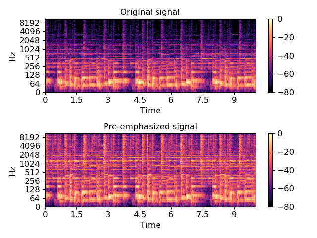

librosa.effects.preemphasis¶
-
librosa.effects.preemphasis(y, coef=0.97, zi=None, return_zf=False)[source]¶ Pre-emphasize an audio signal with a first-order auto-regressive filter:
y[n] -> y[n] - coef * y[n-1]Parameters: - y : np.ndarray
Audio signal
- coef : positive number
Pre-emphasis coefficient. Typical values of coef are between 0 and 1.
At the limit coef=0, the signal is unchanged.
At coef=1, the result is the first-order difference of the signal.
- zi : number
Initial filter state
- return_zf : boolean
If True, return the final filter state. If False, only return the pre-emphasized signal.
Returns: - `y_out` : np.ndarray
pre-emphasized signal
- zf : number
if return_zf=True, the final filter state is also returned
Examples
Apply a standard pre-emphasis filter
>>> import matplotlib.pyplot as plt >>> y, sr = librosa.load(librosa.util.example_audio_file(), offset=30, duration=10) >>> y_filt = librosa.effects.preemphasis(y) >>> # and plot the results for comparison >>> S_orig = librosa.amplitude_to_db(np.abs(librosa.stft(y)), ref=np.max) >>> S_preemph = librosa.amplitude_to_db(np.abs(librosa.stft(y_filt)), ref=np.max) >>> plt.subplot(2,1,1) >>> librosa.display.specshow(S_orig, y_axis='log', x_axis='time') >>> plt.title('Original signal') >>> plt.colorbar() >>> plt.subplot(2,1,2) >>> librosa.display.specshow(S_preemph, y_axis='log', x_axis='time') >>> plt.title('Pre-emphasized signal') >>> plt.colorbar() >>> plt.tight_layout();
Apply pre-emphasis in pieces for block streaming. Note that the second block initializes zi with the final state zf returned by the first call.
>>> y_filt_1, zf = librosa.effects.preemphasis(y[:1000], return_zf=True) >>> y_filt_2, zf = librosa.effects.preemphasis(y[1000:], zi=zf, return_zf=True) >>> np.allclose(y_filt, np.concatenate([y_filt_1, y_filt_2])) True
